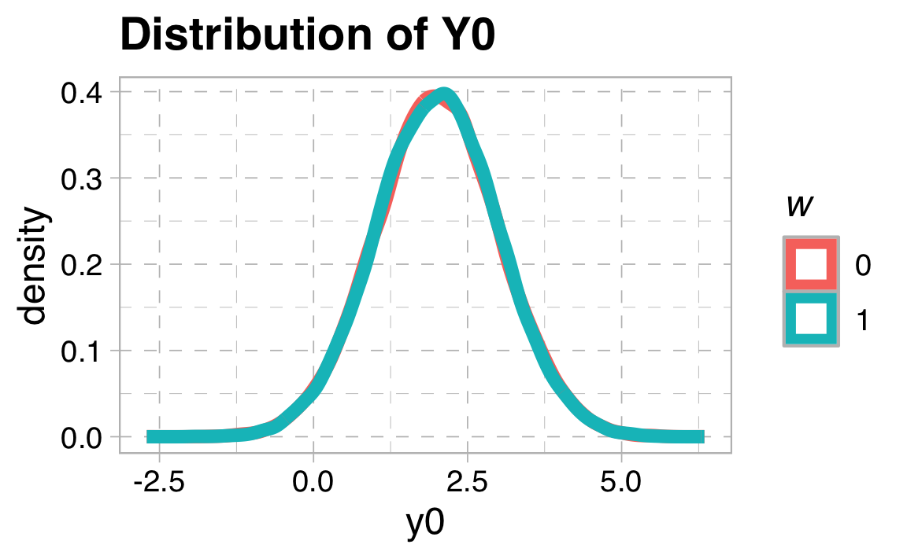
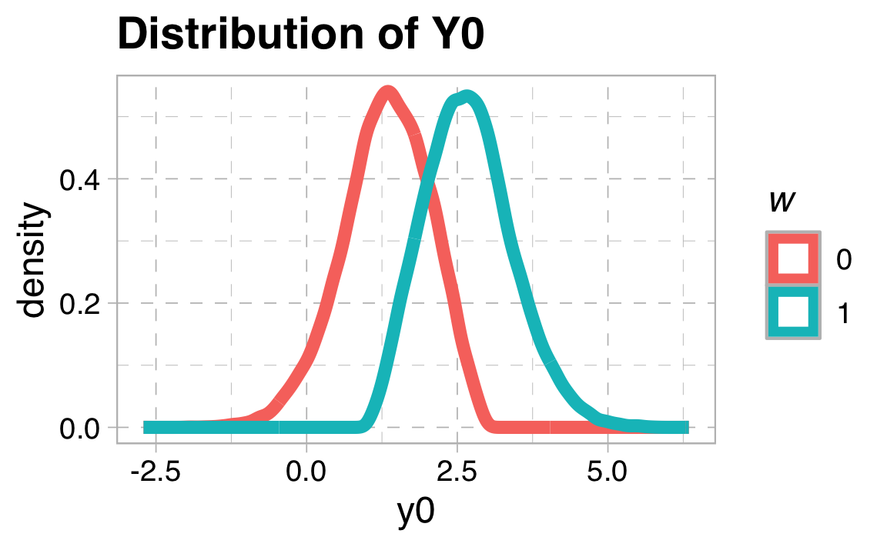
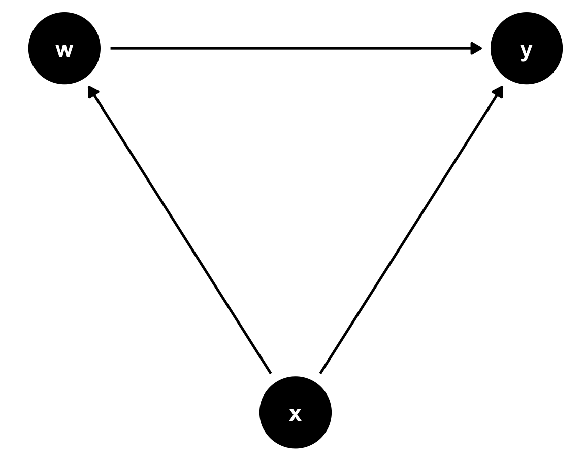
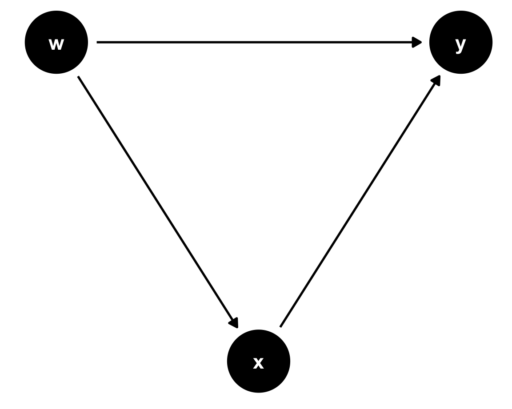
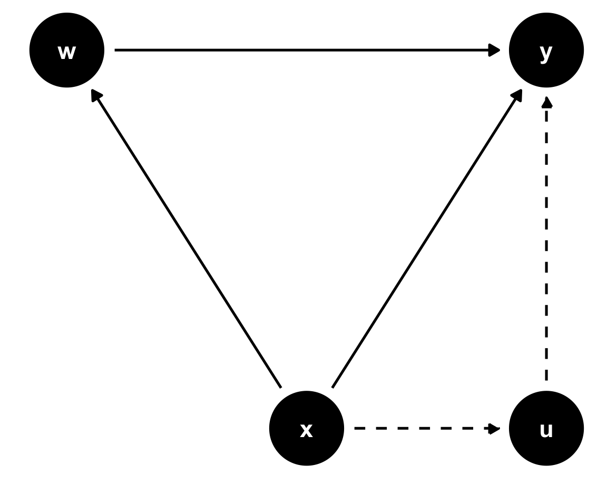
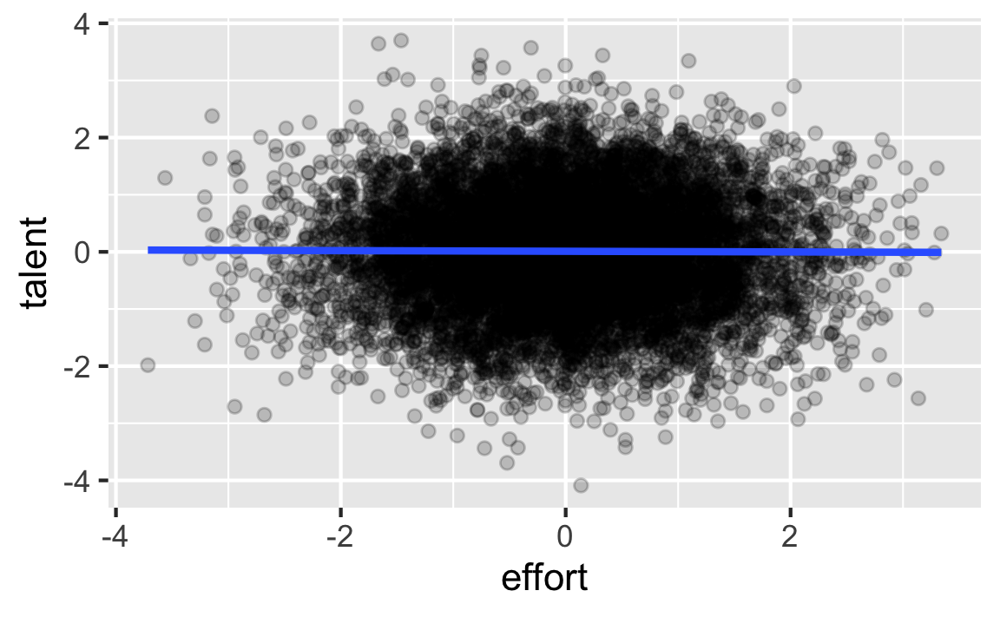
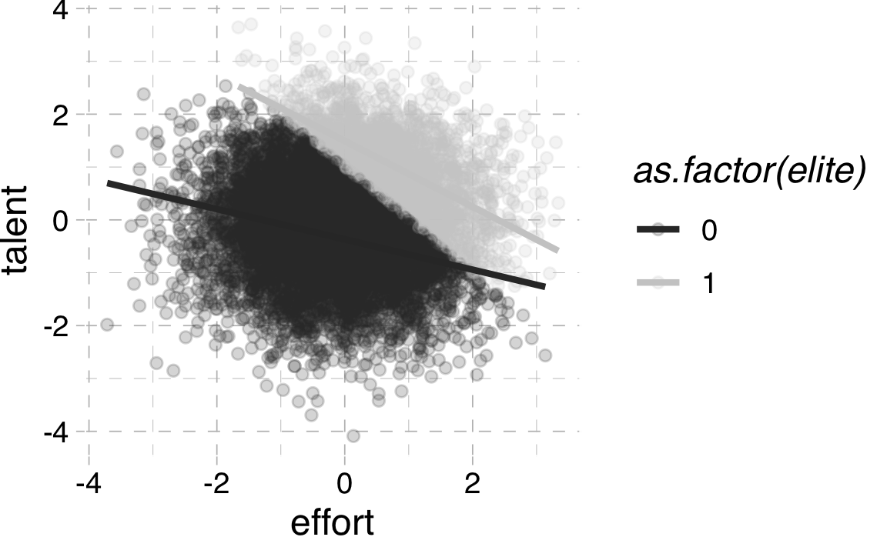

── Attaching core tidyverse packages ──────────────────────── tidyverse 2.0.0 ──
✔ dplyr 1.1.4 ✔ readr 2.1.5
✔ forcats 1.0.0 ✔ stringr 1.5.1
✔ ggplot2 3.5.2 ✔ tibble 3.2.1
✔ lubridate 1.9.4 ✔ tidyr 1.3.1
✔ purrr 1.0.4
── Conflicts ────────────────────────────────────────── tidyverse_conflicts() ──
✖ dplyr::filter() masks stats::filter()
✖ dplyr::lag() masks stats::lag()
ℹ Use the conflicted package (<http://conflicted.r-lib.org/>) to force all conflicts to become errors
Loading required package: kableExtra
Attaching package: 'kableExtra'
The following object is masked from 'package:dplyr':
group_rows
Attaching package: 'ggdag'
The following object is masked from 'package:stats':
filterCausality and Regression
EC655 - Econometrics
Justin Smith
Wilfrid Laurier University
Fall 2023

Introduction
Introduction
Empirical economists are often interested in a causal effect
- The independent effect of a particular variable on the outcome
It is important for policy
E.g. a school district looking to implement pre-kindergarten program
Need to know if pre-k has independent effects on current and future outcomes
- Do not want estimate confounded with parent background
Can we interpret regression slopes as causal?
First, we attempt to understand the underlying concept of causality
Rubin Causal Model
Model Setup
Economists often study causality within the Rubin Causal Model
Imagine an individual either gets a “treatment” or “no treatment”
Getting a drug, or placebo
Going to university, or stopping at high school
Being in a small class, or large class
Define the following potential outcomes
\(y_{1}\) is the outcome with treatment
\(y_{0}\) is the outcome without treatment
\(w\) is a binary variable with 1 denoting treatment, and 0 no treatment
Important
We only observe one potential outcome, and the other is hypothetical. For a treated person we see \(y_{1}\), and for an untreated person we see \(y_{0}\)
Treatment Effects
We would like to know the treatment effect \(y_{1} - y_{0}\) for an individual
This is the causal effect of the treatment
Effect differs from person to person in the population
Fundamental problem of causal inference: we never observe both \(y_{1}\) and \(y_{0}\)
We only observe \((y, w)\), where
\[y = y_{0} + (y_{1} -y_{0})w\]
- We observe treatment status, potential outcome given that treatment status
The counterfactual outcome with opposite treatment is never observed
Regression Slopes and Potential Outcomes
Suppose we regress \(y\) on \(w\)
The slope in this regression is \(\beta = E(y|w=1) - E(y|w=0)\)
Express in terms of potential outcomes
\[E(y|w=1) - E(y|w=0)\] \[= E(y_{1}|w=1) - E(y_{0}|w=0)\] \[= \left [ E(y_{1}|w=1) - E(y_{0}|w=1) \right ] + E(y_{0}|w=1) - E(y_{0}|w=0)\]
The first term is called the Average Treatment Effect on the Treated (ATT)
- Average effect of the treatment for those in the treatment group
Note
Groups in the population can have different treatment effects, so there isn’t necessarily a single treatment or causal effect.
Selection bias
The second term is Selection Bias
- Preexisting difference between treatment and control groups
Example: \(y\) is income, and \(w\) is going to university
Selection bias is potential income difference in absence of university
Would happen if people who end up in university are already smarter
If selection bias exists, regression slope is a combination of treatment effect and bias
There are some cases where there is no selection bias, and regression slope is only causal effect
We outline those below
Randomizing Treatment Status
Randomization and Independence of Treatment
A common way to isolate treatment effects is to randomize \(w\)
Blindly put people into treatment or control group
Ensures that on average the two groups are similar at baseline
When treatment is randomized, potential outcomes are independent from treatment \[(y_{0}, y_{1}) \perp w\]
Independence implies conditioning on \(w\) has no effect on expectation
\[E(y_{0}|w=1) =E(y_{0}|w=0)\] \[E(y_{0}|w) = E(y_{0})\] \[E(y_{1}|w) = E(y_{1})\]
Randomization and Treatment Effects
With randomization, selection bias is zero
\[E(y_{0}|w=1) - E(y_{0}|w=0) = E(y_{0}|w=1) - E(y_{0}|w=1) = 0\]
As a result the population regression slope is \[\beta = E(y|w=1) - E(y|w=0)\] \[= E(y_{1}|w=1) - E(y_{0}|w=0)\] \[= E(y_{1}) - E(y_{0})\]
This is the Average Treatment Effect (ATE)
Note
The ATE is the treatment effect averaged across everyone in the population, whereas the ATT is the treatment effect among only people in the treatment group (i.e. excludes people in the control group).
Recent Example in Economics Literature
Randomization is the standard way to measure the effects of medical treatments
It is becoming more popular in economics
Ex: Bangladesh mask study (Abaluck et. al., 2021)
Randomized promoting mask use in rural Bangladesh
Compare COVID rates between treatment and control
Find some positive effect of masks, especially for age 50+
Causal Effects without Randomization
Mean Independence of Treatment
Most economic data do not come from randomized experiments
We can still uncover causal effects without experiments
One way is through Mean Independence
\[E(y_{0}|w) = E(y_{0})\] \[E(y_{1}|w) = E(y_{1})\]
Says average potential outcomes do not depend on treatment status
Weaker assumption than full statistical independence
Full independence means one event has no effect on probability of another
Mean Independence of Treatment
With mean independence, we get
\[\beta = E(y|w=1) - E(y|w=0)\] \[= \left [ E(y_{1}|w=1) - E(y_{0}|w=1) \right ] + E(y_{0}|w=1) - E(y_{0}|w=0)\] \[= \left [ E(y_{1}|w=1) - E(y_{0}|w=1) \right ]\] \[= E(y_{1}) - E(y_{0})\]
Regression slope equals ATE (and ATT in this case)
Is this assumption realistic?
Means both potential outcomes unrelated to treatment
Whether this is realistic depends on context
Mean Independence of \(y_{0}\)
A variation if this assumption is mean independence of \(\mathbf{y_{0}}\)
\[E(y_{0}|w) = E(y_{0})\]
The regression slope in this case is
\[\beta = E(y|w=1) - E(y|w=0)\] \[= \left [ E(y_{1}|w=1) - E(y_{0}|w=1) \right ] + E(y_{0}|w=1) - E(y_{0}|w=0)\] \[= \left [ E(y_{1}|w=1) - E(y_{0}|w=1) \right ]\]With this assumption, we only measure the ATT (Not ATE)
Is this realistic?
Means there are no baseline differences between groups on average
Puts no restriction on differences in treated outcome
Conditional Mean Independence
More commonly, we can use other variables to control for selection bias
Suppose we observe a set of pre-treatment characteristics \(\mathbf{x}\)
Ex: gender, parental education, school test scores, etc.
Key is they are determined before treatment
Conditional Mean Independence is when the mean of the potential outcomes is independent of treatment conditional on \(\mathbf{x}\)
\[E(y_{0}|w=1, \mathbf{x}) =E(y_{0}|w=0, \mathbf{x})\] \[E(y_{0}|w, \mathbf{x}) = E(y_{0}| \mathbf{x})\] \[E(y_{1}|w, \mathbf{x}) = E(y_{1}|\mathbf{x})\]
Note
A stronger assumption is conditional independence \((y_{0}, y_{1}) \perp w |\mathbf{x}\), where each potential outcome is fully independent of treatment conditional on \(\mathbf{x}\)
Conditional Mean Independence
Imagine running a regression of \(y\) on \(w\) and \(\mathbf{x}\)
The population regression slope is
\[\beta = E(y|w=1, \mathbf{x}) - E(y|w=0, \mathbf{x})\]
When this assumption is true we can get treatment effects at each \(\mathbf{x}\) \[E(y|w=1, \mathbf{x}) - E(y|w=0, \mathbf{x})\] \[= E(y_{1}|w=1, \mathbf{x}) - E(y_{0}|w=1, \mathbf{x})= E(y_{1} | \mathbf{x}) - E(y_{0}| \mathbf{x})\] \[= ATT( \mathbf{x}) =ATE( \mathbf{x})\]
These treatment effects hold \(\mathbf{x}\) constant
- They are an average of the treatment effects across different values of \(\mathbf{x}\)
Continuous Treatment
We can also apply this model to a continuous treatment variable
All of the intuition we have discussed at the same
- Just slightly more complex because treatment is continuous
Summary of Rubin Model
Regression will identify a causal effect if
Treatment comes from a randomized experiment
Potential outcomes are mean independent of treatment
Potential outcomes are mean independent of treatment conditional on \(\mathbf{x}\)
Without one of these, we could have selection bias
- Regression does not provide a causal effect
Unfortunately, these assumptions are generally not met
- We will cover other methods to uncover the causal effect in this case
Simulation Examples for Rubin Model
Introduction
This section will demonstrate the Rubin model with simulated data
We will show what happens in regression under different assumptions
Use large samples to simulate the population
- Replace population values with consistent estimators
We will simulate both potential outcomes
- Even though they would not both be observed in practice
Data Setup
Code to the right creates potential outcomes
For simplicity the treatment effect is set to 5 for everyone
Outcomes \(y_{0}\) and \(y_{1}\) created to have a Normal distribution
- Normality is not important for the model
data <- data.frame(eta=rnorm(100000,0,1)) %>%
mutate(y0 = 2 + eta, y1 = y0 + 5,
treat_eff = y1 - y0)
sumtable(data, summ=c('notNA(x)','mean(x)','sd(x)'),
summ.names = c('N', 'Mean', 'SD')) | Variable | N | Mean | SD |
|---|---|---|---|
| eta | 100000 | 0.0096 | 1 |
| y0 | 100000 | 2 | 1 |
| y1 | 100000 | 7 | 1 |
| treat_eff | 100000 | 5 | 0.00000000000000021 |
Random Assignment to Treatment
Next assign treatment \(w\) using randomization
In the code, \(w=1\) randomly with probability 0.5
Compute observed \(y\) based on treatment status
data %<>% mutate(w = if_else(runif(100000) > .5,1,0),
y = y0 + (y1-y0)*w) %>%
group_by(w)
head(data)
## # A tibble: 6 × 6
## # Groups: w [2]
## eta y0 y1 treat_eff w y
## <dbl> <dbl> <dbl> <dbl> <dbl> <dbl>
## 1 -0.177 1.82 6.82 5 0 1.82
## 2 0.351 2.35 7.35 5 0 2.35
## 3 -0.331 1.67 6.67 5 1 6.67
## 4 -1.99 0.0120 5.01 5 0 0.0120
## 5 -1.53 0.469 5.47 5 1 5.47
## 6 1.13 3.13 8.13 5 1 8.13Random Assignment to Treatment
With random assignment we know
\(y_{0}\) is independent of \(w\)
\(y_{1}\) is independent of \(w\)
So the distributions of \(y_{0}\) and \(y_{1}\) are the same when \(w=0\) and when \(w=1\)
To the right we show the distribution of \(y_{0}\)
ggplot(data, aes(x=y0, color=as.factor(w))) +
geom_density(alpha = .4, size=2) +
theme_pander(nomargin=FALSE, boxes=TRUE) +
labs(title = "Distribution of Y0", color = "w")
## Warning: Using `size` aesthetic for lines was deprecated in ggplot2 3.4.0.
## ℹ Please use `linewidth` instead.
Random Assignment to Treatment
Randomization ensures difference in average \(y\) between groups equals the ATE and ATT
On the right we show the difference in mean of \(y\) equals 5
summarize(data, my = mean(y)) %>%
mutate(diff_y = my - lag(my))
## # A tibble: 2 × 3
## w my diff_y
## <dbl> <dbl> <dbl>
## 1 0 2.01 NA
## 2 1 7.01 5.00Random Assignment to Treatment
Can implement difference in means as a regression
Recall slope in OLS regression of \(y\) on dummy variable is difference in means of \(y\)
lm(y ~ w, data)
##
## Call:
## lm(formula = y ~ w, data = data)
##
## Coefficients:
## (Intercept) w
## 2.009 5.001Selection into Treatment
Now simulate selection into treatment based on \(y_{0}\)
- Treatment now related to value of \(y_{0}\)
We know \(\eta\) determines value of \(y_{0}\)
- If we make \(w=1\) with higher values of \(\eta\) then \(w\) is related to \(y_{0}\)
data2 <- data %>%
ungroup() %>%
select(eta, y0,y1) %>%
mutate(w = if_else(eta + runif(100000,-1,1) > 0,1,0),
y = y0 + (y1-y0)*w) %>%
group_by(w)
sumtable(data2,
summ=c('notNA(x)','mean(x)','sd(x)'),
summ.names = c('N', 'Mean', 'SD' ),
group="w",
group.long = TRUE)Selection into Treatment
The means of \(y_{0}\) and \(y_{1}\) are now different by group
Because of selection bias
- Treated group has better non-treated outcomes
sumtable(data2,
summ=c('notNA(x)','mean(x)','sd(x)'),
summ.names = c('N', 'Mean', 'SD' ),
group="w",
group.long = TRUE)| Variable | N | Mean | SD |
|---|---|---|---|
| w: 0 | |||
| eta | 49588 | -0.68 | 0.73 |
| y0 | 49588 | 1.3 | 0.73 |
| y1 | 49588 | 6.3 | 0.73 |
| y | 49588 | 1.3 | 0.73 |
| w: 1 | |||
| eta | 50412 | 0.69 | 0.73 |
| y0 | 50412 | 2.7 | 0.73 |
| y1 | 50412 | 7.7 | 0.73 |
| y | 50412 | 7.7 | 0.73 |
Selection into Treatment
The distribution of \(y_{0}\) differs by \(w\)
- Treated group has better baseline outcomes
This creates selection bias
ggplot(data2, aes(x=y0, color=as.factor(w))) +
geom_density(alpha = .4, size=2) +
theme_pander(nomargin=FALSE, boxes=TRUE) +
labs(title = "Distribution of Y0", color = "w")
Selection into Treatment
Selction bias shows up when you take difference in mean \(y\)
We know the true treatment effect is 5
But difference in \(y\) is larger
There is positive selection bias
Bias is about 1.4
summarize(data2, my = mean(y)) %>%
mutate(diff_y = my - lag(my))
## # A tibble: 2 × 3
## w my diff_y
## <dbl> <dbl> <dbl>
## 1 0 1.32 NA
## 2 1 7.69 6.37Selection into Treatment
You can implement this as a regression
OLS estimates biased treatment effect
Remember the intercept is mean of \(y\) when \(w=0\)
lm(y ~ w, data2)
##
## Call:
## lm(formula = y ~ w, data = data2)
##
## Coefficients:
## (Intercept) w
## 1.320 6.367Conditional Mean Independence
Finally consider conditional mean independence
Treatment is related to \(y_{0}\), but only through \(x\)
- For people with the same \(x\), \(y_{0}\) is unrelated to \(w\)
Ex: Education and wages
Smart people \((x = 1)\) earn higher wages regardless of schooling \((y_0)\)
Smart people are more likely to go to university \((w = 1)\)
People at university will have higher \(y_0\)
data3 <- data %>%
ungroup() %>%
select(eta) %>%
mutate(x = if_else(runif(100000) > .5,1,0),
w = if_else(x + runif(100000, -1,1) > .5,1,0),
y0 = 2 + 3*x + eta,
y1 = y0 + 5,
y = y0 + (y1-y0)*w) %>%
group_by(w)
sumtable(data3,
summ=c('notNA(x)','mean(x)','sd(x)'),
summ.names = c('N', 'Mean', 'SD' ),
group="w",
group.long = TRUE)Conditional Mean Independence
Comparing treatment and control, \(y_{0}\) is bigger when \(w=1\)
This is because
\(y_{0}\) is bigger when \(x=1\)
\(w\) more likely to be \(1\) when \(x=1\)
sumtable(data3,
summ=c('notNA(x)','mean(x)','sd(x)'),
summ.names = c('N', 'Mean', 'SD' ),
group="w",
group.long = TRUE)| Variable | N | Mean | SD |
|---|---|---|---|
| w: 0 | |||
| eta | 49824 | 0.012 | 1 |
| x | 49824 | 0.25 | 0.43 |
| y0 | 49824 | 2.8 | 1.6 |
| y1 | 49824 | 7.8 | 1.6 |
| y | 49824 | 2.8 | 1.6 |
| w: 1 | |||
| eta | 50176 | 0.007 | 1 |
| x | 50176 | 0.75 | 0.43 |
| y0 | 50176 | 4.3 | 1.6 |
| y1 | 50176 | 9.3 | 1.6 |
| y | 50176 | 9.3 | 1.6 |
Conditional Mean Independence
What if we focus only on people with \(x=1\)?
No difference in \(y_{0}\) between treated and control
Because \(x\) is only reason why they differed
This is holding \(x\) fixed
sumtable(filter(data3, x==1),
summ=c('notNA(x)','mean(x)','sd(x)'),
summ.names = c('N', 'Mean', 'SD' ),
group="w")| Variable | N | Mean | SD | N | Mean | SD |
|---|---|---|---|---|---|---|
| eta | 12516 | 0.0091 | 1 | 37625 | 0.0058 | 1 |
| x | 12516 | 1 | 0 | 37625 | 1 | 0 |
| y0 | 12516 | 5 | 1 | 37625 | 5 | 1 |
| y1 | 12516 | 10 | 1 | 37625 | 10 | 1 |
| y | 12516 | 5 | 1 | 37625 | 10 | 1 |
Conditional Mean Independence
Same result if we hold \(x=0\)?
- Again because \(x\) is only reason why they differed
sumtable(filter(data3, x==0),
summ=c('notNA(x)','mean(x)','sd(x)'),
summ.names = c('N', 'Mean', 'SD' ),
group="w")| Variable | N | Mean | SD | N | Mean | SD |
|---|---|---|---|---|---|---|
| eta | 37308 | 0.013 | 1 | 12551 | 0.011 | 0.99 |
| x | 37308 | 0 | 0 | 12551 | 0 | 0 |
| y0 | 37308 | 2 | 1 | 12551 | 2 | 0.99 |
| y1 | 37308 | 7 | 1 | 12551 | 7 | 0.99 |
| y | 37308 | 2 | 1 | 12551 | 7 | 0.99 |
Conditional Mean Independence
Regression of \(y\) on \(w\) is biased
- Because \(w\) is correlated with error
But regression of \(y\) on \(w\) and \(x\) generates actual treatment effect
This is conditional mean independence
- Holding \(x\) fixed, potential outcomes no longer related to treatment
lm(y ~ w, data3)
##
## Call:
## lm(formula = y ~ w, data = data3)
##
## Coefficients:
## (Intercept) w
## 2.766 6.491
lm(y ~ w + x, data3)
##
## Call:
## lm(formula = y ~ w + x, data = data3)
##
## Coefficients:
## (Intercept) w x
## 2.013 4.997 2.996Directed Acyclic Graphs (DAG)
Introduction
The Rubin framework is one way to understand causality
Another popular method is a Directed Acyclic Graph (DAG)
A DAG is a graphical tool to show relationships between variables
It can make a complex model easier to understand
For econometrics, it can highlight bias in our estimates
- And how to overcome the bias
In this section we will introduce DAGs, and expand on it in further sections
Basic DAG
Suppose we are interested in the direct effect of \(w\) on \(y\)
\(w\) is the treatment
\(y\) is the outcome
The DAG to the right shows how \(w\) and \(y\) could be related
\(x\) is another factor that is related to both \(w\) and \(y\)
The dots (with variable names) are nodes
The lines connecting nodes are edges
Direction of the arrows is the direction of the relationship

Basic DAG
We want to find all the paths that can lead from \(w\) to \(y\)
In this DAG there are two
A direct path \(w \rightarrow y\)
An indirect path \(w \leftarrow x \rightarrow y\)
A correlation between \(y\) on \(w\) would reflect both paths
\(w\) can directly cause \(y\)
\(x\) could change \(w\) and \(y\) simultaneously creating a spurious correlation between them

Types of Paths
In a DAG you may find two types of paths
- Front Door: arrows point away from treatment and toward to outcome
- Back Door: arrows point toward treatment
We are usually interested in front door paths
- Show how \(w\) causes changes in \(y\)
Back door paths are usually bad
- Show ways that a correlation between treatment and outcome are biased

Caution
There can be multiple front door paths in a DAG, and we might not be interested in all of them.
Open and Closed Paths
Paths between treatment and outcome can be open or closed
- Open: all variables along the path are allowed to vary
- Closed: at least one variable along the path cannot vary, or there is a collider on the path
If you regress \(y\) on \(w\) both paths are open
\(w\) and \(y\) can vary, so direct path is open
We are not holding \(x\) fixed, so indirect path is also open
You can close the backdoor path by controlling for \(x\)
- Regress \(y\) on \(w\) and \(x\)

Open and Closed Paths
Suppose we are interested in the causal effect of \(w\) on \(y\)
In a DAG, this means we only want the path \(w \rightarrow y\)
We need to leave this path open, but close all others
The regression of \(y\) on \(w\) and \(x\) does this
It works in this case because \(x\) is a confounder
Controlling for other variables does not always identify a causal effect

Different Associations in DAG
Confounder

Mediator

Collider
Confounder
The DAG we have been working with has \(x\) as a confounder
Confounder: The treatment and outcome have a common cause
In this example
\(x\) changes \(w\) and \(y\) simultaneously
Makes it look like \(w\) and \(y\) are related, but it is spurious
Example: Returns to Schooling
\(y\) is wages, \(w\) is years of schooling
A confounder \(x\) would be intelligence
Can close the backdoor path by controlling for \(x\)

Mediator
- In this DAG we have two paths
\[w \rightarrow y\] \[w \rightarrow x \rightarrow y\]
Both are front door paths
In this example \(x\) acts as a mediator
Mediator: A variable within a causal pathway between treatment and outcome
In this example
\(w\) causes \(y\) directly
But also indirectly through \(x\)

Mediator
This is not the same as omitted variables bias
A regression of \(y\) on \(w\) measures the causal effect
- Two causal paths between \(w\) and \(y\)
We can still close the indirect path by controlling for \(x\)
This would leave only the direct path
Whether we want to do this depends on the research question
If you want only direct effect, control for \(x\)
For total effect, do not control
Mediator
Example: Effect of drinking on lifespan
\(w\) is drinking, \(y\) is lifespan, \(x\) is drug use
If drug use is a mediator then
\[drinking \rightarrow lifespan\] \[drinking \rightarrow drugs \rightarrow lifespan\]
Drinking has direct effect on lifespan, and also through drug use
Regression of \(lifespan\) on \(drinking\) measures total effect
Regression of \(lifespan\) on \(drinking\) and \(drug\) use measures only direct effect

Collider
Final association is trickier
Collider: a variable that is influenced by two or more variables
In this DAG, \(x\) is a collider
- Both \(y\) and \(w\) point to it
Paths that contain a collider are closed
In this case, you could regress \(y\) on \(w\) and get causal effect
Collider
Controlling for a collider opens the path
Regression of \(y\) on \(w\) and \(x\) does not measure causal effect
Collider Bias: bias induced by controlling for collider
Collider bias can
Create an association between \(w\) and \(y\) when there is no direct one
Hide a direct association
Easiest way to understand is through example

Collider
Example: talent and effort
\(w\) is talent, \(y\) is effort, \(x\) is being in elite school
Assume no direct link between talent and effort
Both talented and hard working students make it to elite schools
Controlling for school, talent and effort look negatively related
You need to be smart or work hard to get into Harvard
Low-effort students must be smart, and un-smart students must be hard working
Collider
Example: gender pay gap
\(w\) is gender, \(y\) is ability, \(x\) is occupation
Assume men and women have equal ability
High ability people make it into certain occupations
If discrimination against women, they must be high ability to get in
Controlling for occupation, women appear to have higher ability
This could lead to gender pay gap being larger within jobs

A More Complicated DAG
::: columns ::: {.column width=“50%”}
DAGs are often much more complicated
Here is a DAG with 4 variables
- \(y\) is outcome
- \(w\) is treatment
- \(x\) is confounder
- \(u\) is unobserved confounder
There are several paths connecting \(w\) and \(y\)
- \(w \rightarrow y\)
- \(w \leftarrow x \rightarrow y\)
- \(w \leftarrow x \rightarrow u \rightarrow y\)
A More Complicated DAG
To close a backdoor path you need to control for one variable along the path
We cannot control for \(u\) because it is unobserved
Controlling for \(x\) closes both backdoor paths

Simulation Examples for DAGs
Introduction
Like we did with Rubin model, we can simulate DAGs
We will illustrate
- Conditional independence
- Collider bias
Again, this is meant to approximate the population
Conditional Independence
Consider the following scenario
- Higher ability people get more schooling
- Higher ability people earn more
- Higher education increases earnings
- Higher ability is related to unobserved determinants of earnings
Without controlling for ability we will overestimate the effect of education
dagdata <- tibble(
ability = rnorm(10000),
educ = ifelse(ability + rnorm(10000, mean = 0, sd = 0.5) > 1,1,0),
u = ability + rnorm(10000, mean = 0, sd = 2),
inc = educ + ability + u
)
lm(inc ~ educ, data = dagdata)
##
## Call:
## lm(formula = inc ~ educ, data = dagdata)
##
## Coefficients:
## (Intercept) educ
## -0.5665 4.2109Conditional Independence
In the DAG, there are two backdoor paths from education to earnings
- \(educ \leftarrow ability \rightarrow inc\)
- \(educ \leftarrow ability \rightarrow u \rightarrow inc\)
Controlling for ability closes both paths
- We do not need to separately control for \(u\)
dagdata <- tibble(
ability = rnorm(10000),
educ = ifelse(ability + rnorm(10000, mean = 0, sd = 0.5) > 1,1,0),
u = ability + rnorm(10000, mean = 0, sd = 2),
inc = educ + ability + u
)
lm(inc ~ educ + ability, data = dagdata)
##
## Call:
## lm(formula = inc ~ educ + ability, data = dagdata)
##
## Coefficients:
## (Intercept) educ ability
## -0.02298 1.11790 1.95915Collider Bias
Consider the following scenario
- Talent is unrelated to effort
- Both talent and effort are positively related to being in an elite school
- Elite school admission is based on having high talent or effort
We will see that
Without controlling for elite school, talent and effort are unrelated
Controlling for elite school, talent and effort are negatively related
dagdata2 <- tibble(
talent = rnorm(10000),
effort = rnorm(10000),
elite = ifelse(talent + effort > 1,1,0)
)
ggplot(dagdata2, aes(x = effort, y = talent)) +
geom_point(alpha = 0.2) +
geom_smooth(method = "lm", se = FALSE)
## `geom_smooth()` using formula = 'y ~ x'
Collider Bias
Now color the dots according to elite school status
Then run separate regressions by elite school
Within school, talent and effort are negatively related
ggplot(dagdata2,aes(x = effort, y = talent, color = as.factor(elite)) ) +
geom_point(alpha = 0.2) +
geom_smooth(method = "lm", se = FALSE) +
theme_pander() +
scale_color_grey()
## `geom_smooth()` using formula = 'y ~ x'
Collider Bias
You can see this in regression too
First regress talent on effort
- No relationship
Negative relationship when controlling for elite school status
lm(talent ~ effort, data = dagdata2)
##
## Call:
## lm(formula = talent ~ effort, data = dagdata2)
##
## Coefficients:
## (Intercept) effort
## 0.010222 -0.005635
lm(talent ~ effort + elite, data = dagdata2)
##
## Call:
## lm(formula = talent ~ effort + elite, data = dagdata2)
##
## Coefficients:
## (Intercept) effort elite
## -0.3875 -0.3541 1.6430Omitted Variables Bias in Regression
- Partition the \(\mathbf{x}\) vector into two pieces
\[\mathbf{x}= \begin{bmatrix} \mathbf{x_{1}}& \mathbf{x_{2}} \end{bmatrix}\]
Now imagine running a regression of \(\mathbf{y}\) on only \(\mathbf{x_{1}}\)
The slope of that regression is
\[ \boldsymbol{\beta^{*}} = (\textbf{E}[\mathbf{x_{1}'x_{1}}])^{-1} \textbf{E}[\mathbf{x_{1}}'y] \]
Sub in for \(\mathbf{y}\) using the full \(\mathbf{x}\) vector
\[\boldsymbol{\beta^{*}} = (\textbf{E}[\mathbf{x_{1}'x_{1}}])^{-1} \textbf{E}[\mathbf{x_{1}}'(\mathbf{x_{1}}\boldsymbol{\beta_{1}} + \mathbf{x_{2}}\boldsymbol{\beta_{2}} + u)]\]
\[\boldsymbol{\beta^{*}} = \boldsymbol{\beta_{1}} + (\textbf{E}[\mathbf{x_{1}'x_{1}}])^{-1} \textbf{E}[\mathbf{x_{1}}'\mathbf{x_{2}}]\boldsymbol{\beta_{2}} \]
Omitted Variables Bias in Regression
Important
Omitted Variables Bias in Regression is
\[(\textbf{E}[\mathbf{x_{1}'x_{1}}])^{-1} \textbf{E}[\mathbf{x_{1}}'\mathbf{x_{2}}]\boldsymbol{\beta_{2}} \]
OVB is a function of two things
The relationship between \(\mathbf{x_{2}}\) and \(\mathbf{x_{1}}\)
The relationship between \(\mathbf{x_{2}}\) and \(y\)
If either of them is zero, there is no OVB
The sign of the bias depends on the sign of their product
If they have the same sign, bias is positive
If they have opposite signs, bias is negative